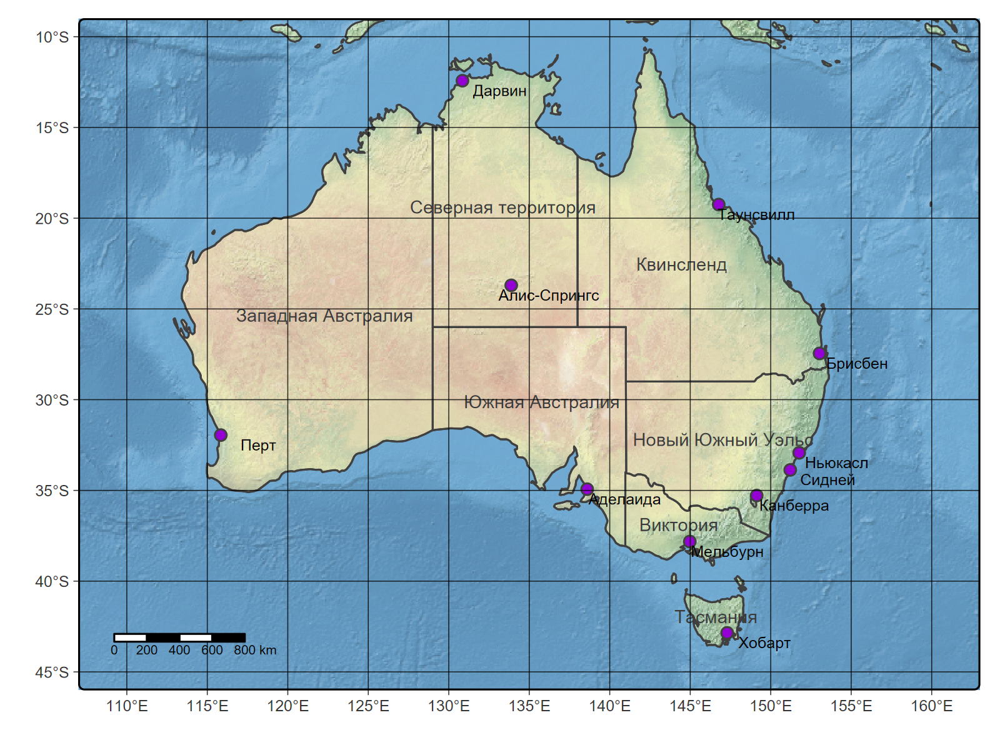
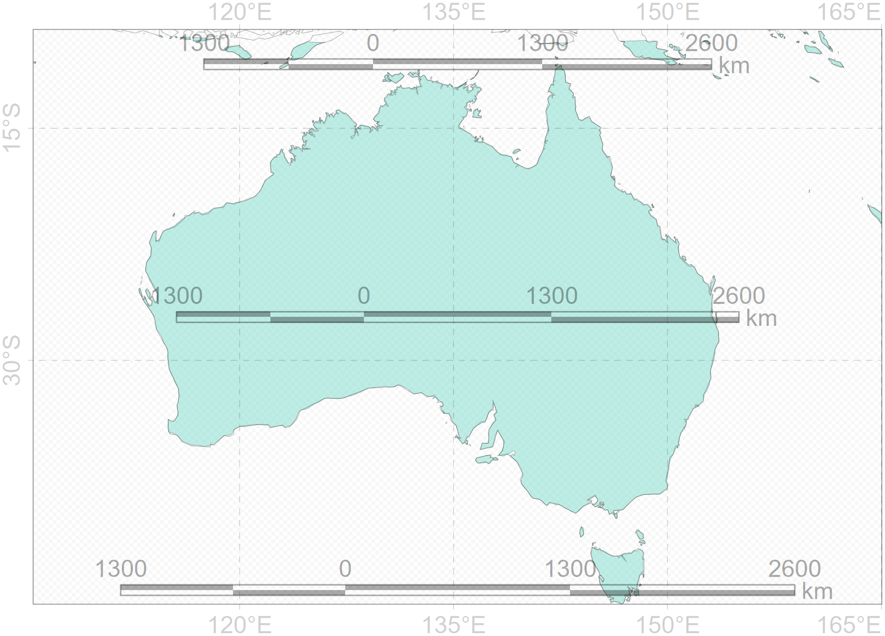

Linking to GEOS 3.12.2, GDAL 3.9.3, PROJ 9.4.1; sf_use_s2() is TRUEterra 1.8.29library(tmap)
root <- "D:/users/platt/shapefile/auxiliary/naturalearth/5.1.2"
ocean<-st_read(file.path(root,"50m_physical","ne_50m_ocean.shp.zip"))Reading layer `ne_50m_ocean' from data source
`C:\Users\platt\shapefile\auxiliary\naturalearth\5.1.2\50m_physical\ne_50m_ocean.shp.zip'
using driver `ESRI Shapefile'
Simple feature collection with 1 feature and 3 fields
Geometry type: MULTIPOLYGON
Dimension: XY
Bounding box: xmin: -180 ymin: -85.19219 xmax: 180 ymax: 90
Geodetic CRS: WGS 84Reading layer `ne_50m_admin_1_states_provinces' from data source
`C:\Users\platt\shapefile\auxiliary\naturalearth\5.1.2\50m_cultural\ne_50m_admin_1_states_provinces.shp.zip'
using driver `ESRI Shapefile'
Simple feature collection with 294 features and 121 fields
Geometry type: MULTIPOLYGON
Dimension: XY
Bounding box: xmin: -180 ymin: -46.96289 xmax: 180 ymax: 83.11611
Geodetic CRS: WGS 84Reading layer `ne_50m_populated_places' from data source
`C:\Users\platt\shapefile\auxiliary\naturalearth\5.1.2\50m_cultural\ne_50m_populated_places.shp.zip'
using driver `ESRI Shapefile'
Simple feature collection with 1251 features and 137 fields
Geometry type: POINT
Dimension: XY
Bounding box: xmin: -175.2206 ymin: -90 xmax: 179.2166 ymax: 78.22097
Geodetic CRS: WGS 84relief<-raster::stack(file.path(root,"../../naturalearth.raster","NE2_50M_SR_W.tif")) |>
as("SpatRaster")
australia<-sf::st_crop(ocean, xmin = 105, ymin = -48, xmax = 165, ymax = -8)Warning: attribute variables are assumed to be spatially constant throughout all geometriesstate.au<-state[state$admin=="Australia",]
state.st<-state.au[state.au$type=="State",]
state.tr<-state.au[state.au$type=="Territory",]
northern<-state.tr[1,]
states.au<-rbind(state.st, northern)
place.au<-place[place$ADM0NAME=="Australia",]
place.au4<-place.au[place.au$SCALERANK<4,]
tmap_mode("plot")ℹ tmap mode set to "plot".(tm1<-tm_shape(relief, bbox=c(107, 163, -46, -9)) +
tm_rgb() +
tm_shape(australia) +
tm_polygons(australia, fill=NULL) +
tm_shape(states.au) +
tm_polygons(fill=NULL) +
tm_text(text="name_ru", size=0.7, col="#3b3b3b") +
tm_shape(place.au4) +
tm_symbols(place.au4, size=0.5, lwd=1, fill="darkviolet") +
tm_text(text="NAME_RU", size=0.6, xmod=2, ymod=-0.5) +
tm_scalebar(position=c("left", "bottom")) +
tm_graticules(size=0.5, alpha=0.8, col="black", lwd=0.5))SpatRaster object downsampled to 2237 by 4473 cells.Bounding box format automatically changed from [xmin, xmax, ymin, ymax] to [xmin, ymin, xmax, ymax]Warning: Current projection unknown. Long lat coordinates (wgs84) assumed.Scale bar set for latitude km and will be different at the top and bottom of the map.
fileout <- "tmap3.png"
# if (!dir.exists(dirname(fileout)))
# dir.create(dirname(fileout),recursive=TRUE)
png(fileout, res=300, width=1600, height=1200,
type="cairo", pointsize=10, family="arial")
print(tm1)SpatRaster object downsampled to 2237 by 4473 cells.Bounding box format automatically changed from [xmin, xmax, ymin, ymax] to [xmin, ymin, xmax, ymax]Warning: Current projection unknown. Long lat coordinates (wgs84) assumed.Scale bar set for latitude km and will be different at the top and bottom of the map.devSVG
2 
ursa::glance(ursa::spatial_geometry(australia),style="merc",border=0,pointsize=16
,scalebar.pos=c("bottom","center","top"),scalebar.w=1300)